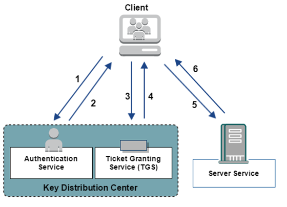
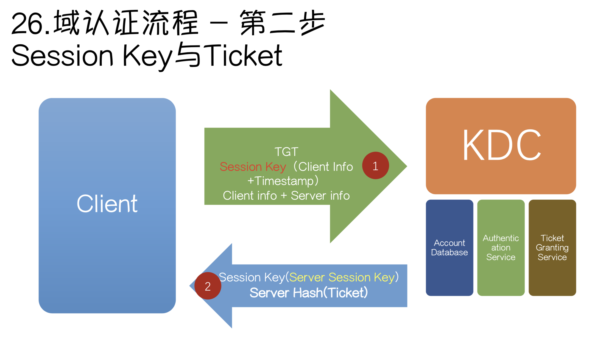
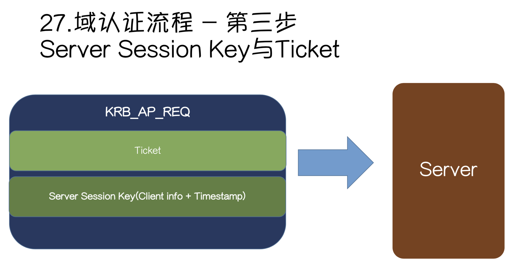

0x00 简介
Kerberos是一种由MIT(麻省理工大学)提出的一种网络身份验证协议，它旨在通过使用密钥加密技术为客户端/服务器应用程序提供强身份验证。
Kerberos认证解决了”如何证明我就是我”这个问题
0x01 协议组成角色
Kerberos协议中主要是有三个角色的存在：
- 访问服务的
Client - 提供服务的
Server KDC(Key Distribution Center)密钥分发中心
KDC默认会安装在一个域的域控中，它负责管理票据、认证票据和分发票据，但KDC不是一个独立的服务，它是由以下服务组成：
- Authentication Server(AS)：
AS的作用就是验证Client的身份，当验证通过时分发一个TGT(Ticket Granting Ticket)票据给Client - Ticket Granting Server(TGS)：
TGS的作用就是通过AS发给Client的票据TGT换取访问Server的票据ST(Server Ticket)
另外还需要补充一个AD(Account database)，它类似于本地认证的SAM文件，存储了所有Client的白名单，只有存在于白名单的Client才能申请到TGT。
从物理层面看，KDC和AD均为域控制器(Domain Controller)。
0x02 认证过程
域认证流程图如下：

域认证粗略流程
粗略流程分为三大步：
Client向KDC请求，希望获取访问Server的权限。KDC得到了这个消息，首先得判断Client是否是可信赖的，也就是白名单黑名单的说法。这就是AS服务完成的工作，通过在AD中存储黑名单和白名单来区分Client。成功后，返回AS返回TGT给ClientClient得到了TGT后，继续向KDC请求，希望获取访问Server的权限。KDC又得到了这个消息，这时候通过Client消息中的TGT，判断出了Client拥有了这个权限，给了Client访问Server的权限ticketClient得到ticket后，终于可以成功访问Server。这个ticket只是针对这个Server，其他Server需要向TGS申请。
域认证
Kerberos认证协议主要步骤如下：
- AS - REQ
- AS - REP
- TGS - REQ
- TGS - REP
- AP - REQ
- AP -REP
相关图片引用倾旋大佬blog
AS - REQ
客户端将时间戳、用户名test、用户名所属的域、请求的服务名等信息发送给AS服务器。其中客户端使用test用户的NTLM hash加密时间戳作为Authentication1。
AS - REP
AS收到来自客户端的数据后，先根据用户名在AD中查找是否存在白名单中，如果存在则取出test用户对应的NTLM Hash来解密Autherticator1，若解密成功得到时间戳，并且时间戳在五分钟内，则代表预认证成功，接下来发送响应包。

KDC此时会生成一个随机字符串，叫Sesssion Key，使用用户名test对应的NTLM Hash加密Session Key，为了描述简单，这里我们用enc_key1来代表这个被加密的Session Key值。
另外一部分数据为TGT，是由KDC中一个用户krbtgt的NTLM Hash加密Session Key和相关客户端信息，通常TGT的到期时间为8个小时，如果超过这个时间就需要重新申请TGT。
enc_key1有些文章中也称作Login Session Key,它的作用是用于确保客户端和KDC的下一阶段之间的通信安全，作为下一阶段的认证密钥
TGS - REQ

客户端收到来自KDC的响应后，用自身的NTLM Hash对enc_key1解密，得到KDC中生成的随机字符串Sesssion Key，然后将时间戳、客户端信息等数据用Session Key进行加密得到Authentication2，连同收到的TGT一起发送给TGS，换取访问指定Server的票据。
TGT中的数据因为是使用KDC中特殊的用户krbtgt的NTLM Hash加密，所以无法解密。
PS：如果我们抓取到
krbtgt用户的NTLM Hash就可以伪造黄金票据
TGS - REP
TGS收到请求后，首先会检查KDC中是否存在所需的服务。然后解密TGT获得Session Key、时间戳和客户端相关信息，使用Session Key解密Authentication2中的数据得到用户名、时间戳等信息。验证TGT和Authentication2中的信息是否正确，如果正确则生成ST(Server Tikcket)票据，和一个新的随机字符串Session Key，我们这里称之为Server Session Key。
其中Server Session Key被AS-REP中的Session Key加密生成ent_key2。使用服务端对应的NTLM Hash加密Server Session Key、客户端信息和结束时间等数据生成ST票据。然后一起发送给客户端。
在这一阶段中，微软引进了两个扩展
S4U2SELF和S4U2PROXY，用来解决非约束委派不安全性问题，相关内容会在以后详细说明
AP - REQ

客户端收到TGS的响应包后，在TGS - REQ步骤中获得的Session Key解密Authentication2得到Server Session Key，将时间戳、用户名等信息加密连同ST一起发送给服务端。
PS：如果我们抓取到服务端的
NTLM Hash就可以伪造白银票据
AP - REP
服务器端收到请求后，使用自身NTLM Hash对ST进行解密，得到Server Session Key和客户端信息，利用Server Session Key解密enc_key2得到客户端信息和时间戳，验证客户端信息和时间戳。
如果验证通过，该票据会一直存在客户端内存中。
Kerberos的攻击方法
0x03 黄金票据和白银票据
黄金票据
原理
黄金票据出现在在AS - REQ & AS - REP中。客户端通过AS认证后，会给客户端返回TGT和enc_key1。其中TGT使用krbtgt用户NTLM Hash加密，如果我们拥有krbtgt用户NTLM Hash，就可以自己给自己签发任意用户的TGT票据。
特点
- 需要与
KDC通信 - 需要
krbtgt用户NTLM Hash
操作
1 | # 导出用户hash(生成Golden Ticket不仅可以使用aes256，也可用krbtgt的NTLM hash) |
白银票据
原理
白银票据出现在TGS - REQ & TGS - REP中。客户端通过TGS认证后，会给客户端返回ST和enc_key2。其中ST使用服务端用户NTLM Hash加密，如果我们拥有服务端用户NTLM Hash，就可以自己给自己签发ST票据。
特点
- 不需要与
KDC通信 - 需要目标服务
NTLM Hash
操作
1 | # 导出用户hash |
由于白银票据需要目标服务器的Hash，所以没办法生成对应域内所有服务器的票据，也不能通过TGT申请。因此只能针对服务器上的某些服务去伪造，伪造的服务类型列表如下:
| 服务注释 | 服务名 |
|---|---|
| WMI | HOST、RPCSS |
| Powershell Remoteing | HOST、HTTP |
| WinRM | HOST、HTTP |
| Scheduled Tasks | HOST |
| LDAP 、DCSync | LDAP |
| Windows File Share (CIFS) | CIFS |
| Windows Remote ServerAdministration Tools | RPCSS、LDAP、CIFS |
区别
- 访问权限不同
黄金票据伪造TGT，从而获取任意Kerberos服务权限
白银票据伪造TGS，只能访问指定Kerberos服务
- 加密方式不同
黄金票据由krbtgt的NTLM Hash加密
白银票据由目标机器的对应NTLM Hash加密
- 认证流程不同
黄金票据利用过程需要和KDC通信
白银票据不需要
0x05 MS14-068
PAC与Kerberos
Kerberos认证解决了”Who am I”这个问题，但没有解决”what can I do”，只要用户的NTLM Hash正确，就可以拿到TGT，就可以访问任意服务。所以为了解决这个问题，微软引进了PAC(Privilege Attribute Certificate)，特权属性证书来增加认证过程中的权限认证。
在一个域中，如果判断一个域用户的权限。只需要提供域用户SID和所在组SID。而在域内KDC，Client和Server之间，Server只信任KDC所提供的权限说明。所以在一个域初始时，KDC拥有Client和Server的权限，KDC告诉Server关于Client的权限，Server验证权限后再决定是否让Client访问自身的网络资源。
因此，微软在Kerveros认证流程中的第2步AS-REP中增加的对Client的PAC(特权属性证书)，也就是Client的权限。
由上图可以看到，PAC是被加密放置在TGT票据中的，并且在PAC的尾部还设置了两处签名校验：Server Signature和KDC Signature(此处两处签名校验均为krgtbt账号对应NTLM Hash生成，而TGT也使用krgtbt的NTLM Hash进行加密，但三者不同点是对应的算法和加密内容不同)
AS将PAC加密放在TGT中通过Client传递给TGS，TGS解密后生成包含PAC的ST票据继续通过Client转发给Server，Server即可判断Client的权限。
在
TGS-REQ/REP阶段，携带PAC的TGT被TGS服务接收后，认证Client的合法性后(解密Authentication2符合认证要求)，会将PAC解密出来，首先验证尾部的两个签名是否合法，如果合法则认为PAC没有被篡改，然后在PAC的尾部更换两处签名:Server Signature更换使用Server对应NTLM Hash生成签名，KDC Signature使用AS中生成的Session Key生成签名。最后将签名的PAC放置在ST票据中进行加密从而传给Server
漏洞产生
在Client发起认证请求时(AS-REQ)，通过设置include-PAC为False，那么返回的TGT中不会包含PAC信息
对于
PAC尾部的签名算法，虽然原理上规定要求带有Key的签名算法才可以，但是该漏洞却允许任意签名算法，只要Client指定签名算法，KDC便会使用指定算计对签名进行校验。所以使用不需要Key值的MD5进行签名，对构造好的高权data(User SID & Group SID)数据进行MD5加密作为签名，KDC中通过对data加密比对尾部签名是否一致来认证该签名的合法。根据上文简介
PAC的相关内容，原理上PAC应该放置在TGT中，但实际上PAC放在TGS-REQ的其他位置，并且KDC中仍能正常解析出数据包中的PAC信息。
PAC被加密放在了TGS-REQ中的req-body里，被Subkey(Subkey为Client随机生成数)加密。而解密用的Subkey值放在Authentication2发送给TGS，TGS通过解密Authentication2得到Subkey，从而正确解析被加密的PAC值并验证为合法。
·
3. 前两步中设置include-PAC为False，验证TGT中的PAC数据合法性，KDC从Authentication2中取出Subkey，根据Subkey验证PAC合法性后，KDC重新使用自身的Server NTLM Hash和Krbtgt NTLM Hash生成尾部签名，拼接得到符合标准流程的PAC文件。然后用完全合法的PAC文件重新生成TGT票据并返回。Subkey加密Server Session key生成enc_key2，后续以便于Client验证KDC的身份。
也就是说，原本TGS-REP阶段返回的ST票据却返回了TGT票据。
0x06 引用
Windows内网协议-Kerberos
彻底理解Windows认证 - 议题解读
内网渗透之kerberos协议分析
深入解读MS14-068漏洞：微软精心策划的后门?